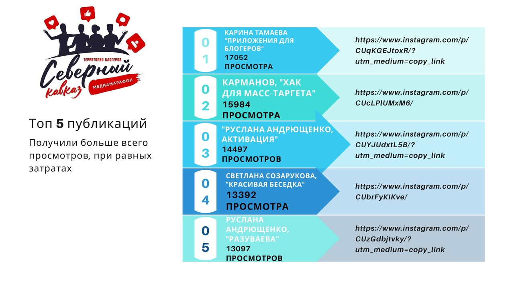
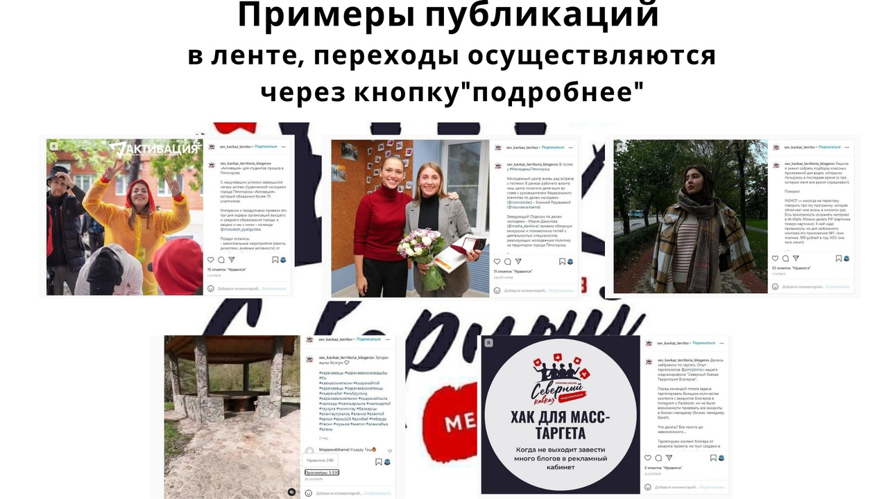

Идет третий месяц медиамарафона «Северный Кавказ: территория блогеров»
Экспертами отобрано свыше 40 материалов, которые уже увидели около полумиллиона человек
Участники ежедневно публикуют более 30-ти постов, а команда проекта, в свою очередь, каждую неделю отбирает самые интересные материалы и показывает их пользователям социальных сетей по всей России!
На сегодняшний день экспертами отобрано свыше 40 материалов, которые уже увидели около полумиллиона человек, и это только начало.
Каждый блогер рассказал о себе и своих творческих успехах и планах в виде кратких справок и видео на сайте партнера — «Кавказ Сегодня» (bloggers.kavtoday.ru).
Специальный раздел помогает не только познакомиться с участниками, но и найти блогера «своего» формата: можно посмотреть работы фотоблогеров, видеоблогеров и тех, кто предпочитает текстовые форматы.
«Время идет, и мы наращиваем темпы — остается полтора месяца активной работы, и каждый хочет успеть привлечь подписчиков своими постами!», — сказал руководитель проекта Александр Карманов.
#Росмолодежь #Росмолгрант #РосмолгрантСКФО #РСВ #грантыРосмолодежи